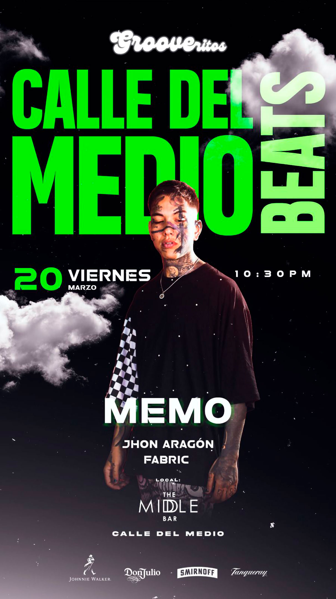

CALLE DEL MEDIO BEATS
fecha: 20/03/26 hora: 10:30pm
lugar: The Middle Bar,
Calle Del Medio 113 (Plaza de Armas), Cusco

FREE PASSES: PASSLINE

Este 20 de marzo la noche se transforma en ritmo en Calle del Medio.
Llega CALLE DEL MEDIO BEATS, una experiencia dedicada a los amantes del Tech House, donde el groove no se detiene y la pista se convierte en un solo latido.
Directamente desde Lima, llega DJ Memo con un set cargado de energía y sonido underground.
Acompañándolo desde Cusco, Jon Aragón, listo para prender la cabina y mantener la vibra en lo más alto.
Prepárate para una noche de bajos profundos, beats hipnóticos y pura conexión con la música.
Jueves 20 de marzo
Lugar: Calle del Medio
Evento: Calle del Medio Beats
Si sabes de Tech House… sabes que esta noche no te la puedes perder.
Genera tus entradas en passline
LINE-UP:
Memo
Daniela Nanis
Fabric